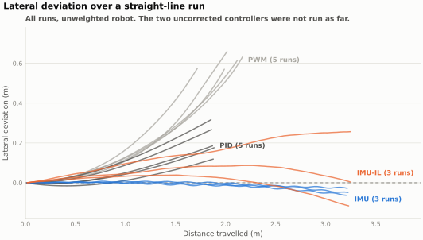
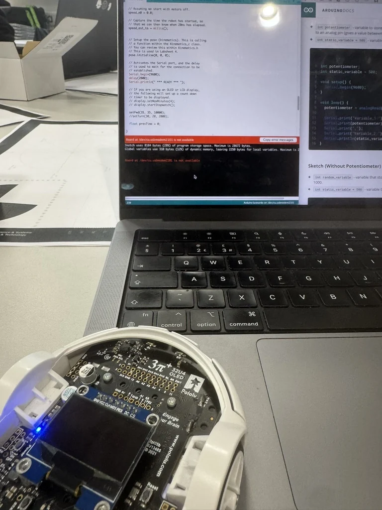
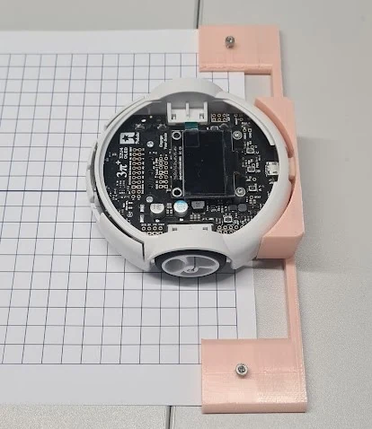
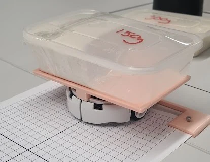
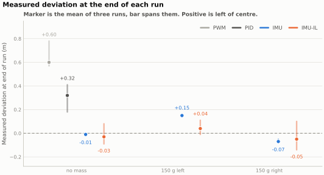
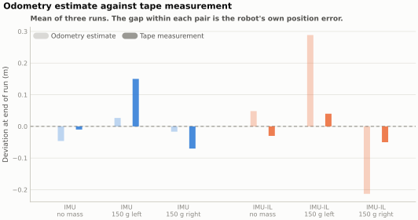

Embedded control · Applied machine learning
Straight-line control on a differential-drive robot
A small differential-drive robot curves when both motors get the same command. We compared four ways of correcting this. The last was a network trained on the robot to copy the best of the other three. Fusing two heading sources fixed the drift. The learned controller did no better, because the heading estimate it learned to copy was drifting.

The problem
With the same PWM on two nominally identical motors, the robot curves. Ours curved left, about 0.6 m off the line over a two-metre run, with no fault on the robot. Manufacturing tolerance, tyre wear and an uneven floor are enough to cause it.
A gain tuned on the bench does not hold with a payload over one wheel. We worked up from the simplest controller to one that learns its own correction, and measured the finishing distance off the line each time.
Four controllers
- Open-loop PWM. The same duty cycle on both motors. This is the baseline.
- PID per wheel. Closed loop on encoder wheel speed, with gains tuned by Ziegler-Nichols. It matches the two motors to each other but does not correct heading. It halved the drift.
- Fused-heading correction. Steers on heading from odometry corrected by the gyro. The gyro is noisy but picks up real rotation. Odometry is smooth but misses wheel slip. Neither is usable on its own.
- A network trained on the robot. Five inputs, one hidden layer of six units, 43 parameters. It runs in a 30 ms control step on the ATmega32U4 alongside the rest of the firmware. It is first trained to copy the fused-heading controller's steering commands, then tuned online against a shaped score. The weights are written to EEPROM, so a policy survives a power cycle.
How it was measured
Odometry was under test, so the main measurement came from outside the robot. Graph paper ran the length of the track. A 3D-printed jig set the same starting pose for each run. We read the finishing offset off the paper with a tape and also logged odometry.



Results
PID roughly halved the open-loop drift. Fusing the two heading sources removed almost all of it. Unweighted, the robot finished within a centimetre or two of the line on every run.
Unweighted, the learned controller finished about 0.03 m off against 0.01 m for fused heading, and its runs were much less repeatable. With 150 g over one wheel it finished around 0.05 m off against 0.11 m.

Source of the error
At the end of a run, the robot's odometry and the tape measurement disagree by up to a quarter of a metre. That gap is the robot's own position error. The controller was steering on odometry.

The fusion weights odometry heavily. The gyro only adds a small correction term, so the fused heading inherits odometry's slow drift. The network was trained to copy a PI controller running on that same estimate. It learned that odometry predicts the expert's output. It also learned to ignore the disagreement between the two sensors, which was the one input that could have shown the estimate going wrong.
The fault is in the training signal. Two changes are worth trying. Weight the gyro more heavily in the fusion before generating training data. Train over a distance long enough for the drift to show up in the score. Our runs were about three metres, which is roughly where the divergence starts.
Summary
The learned controller was the part of the brief I was most interested in. The fix was combining two heading sources that fail in different ways, which we found by measuring from outside the robot.
The result went against our hypothesis. The odometry comparison above shows the cause.
Credit
This was a three-person study for the Robotics Systems unit, with Callum Edwards and Leon Weyrich. I wrote the embedded control stack: the drive loop, the odometry-gyro fusion, the PI expert, calibration and logging. I designed and built the test setup and ran the experiments. Leon did most of the neural policy and its online tuning phase. We shared the analysis and report.
The submitted report is titled around reinforcement learning. The implementation is imitation learning from a PI expert, followed by a tuning phase with no exploration, so it does not estimate a policy gradient. This page uses the more accurate description, and the repository explains the difference against the code.
← All projects